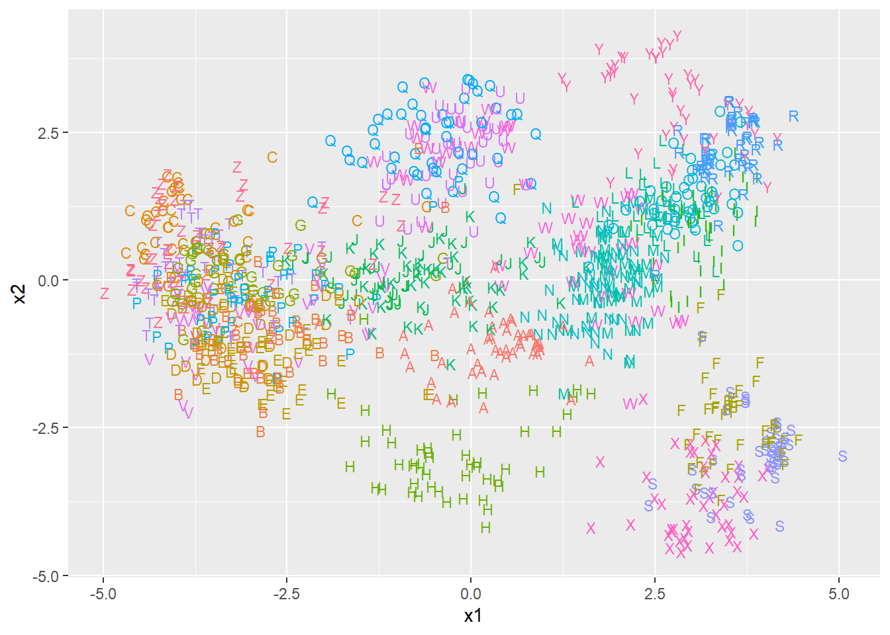
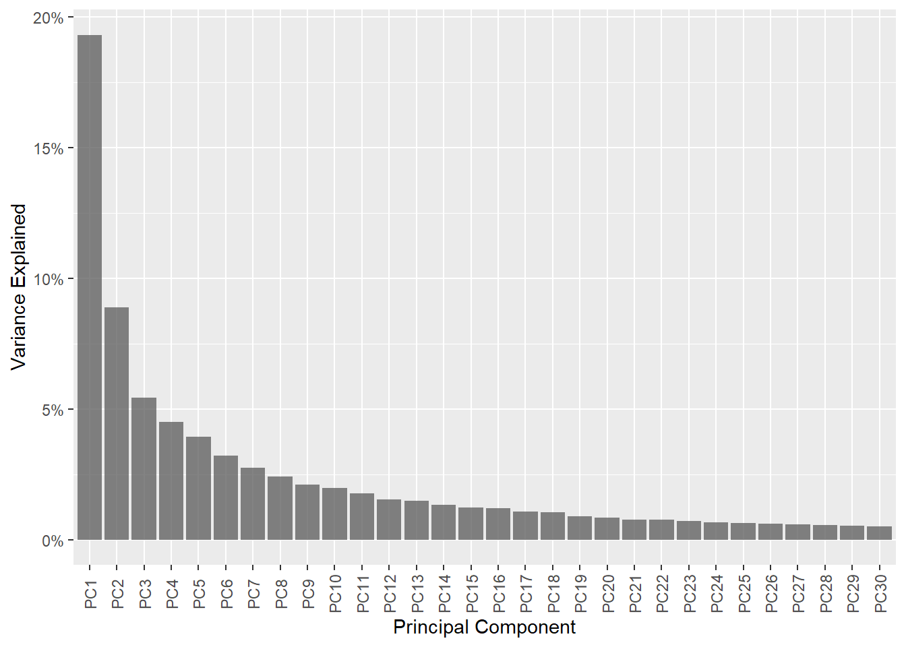
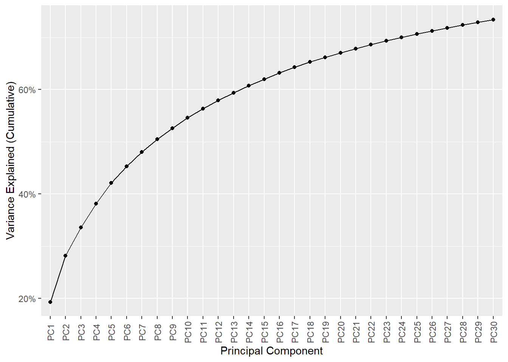
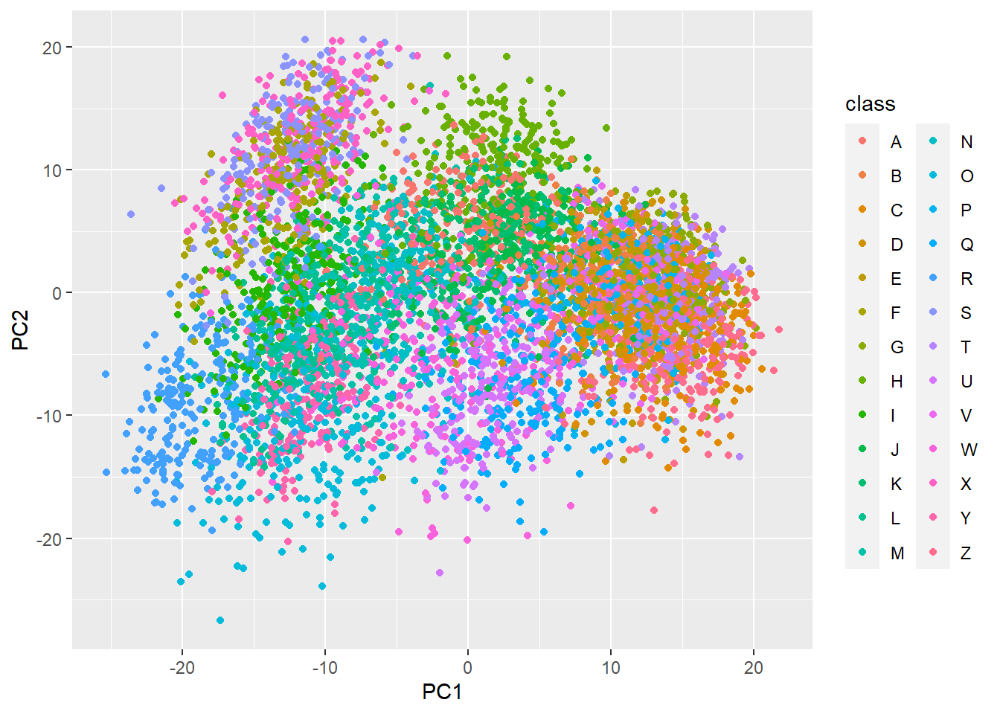
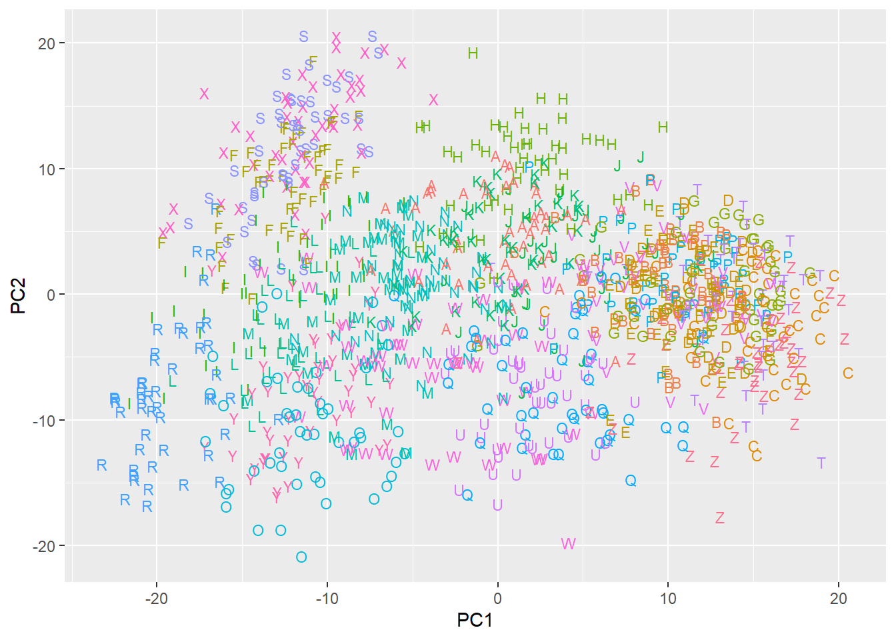
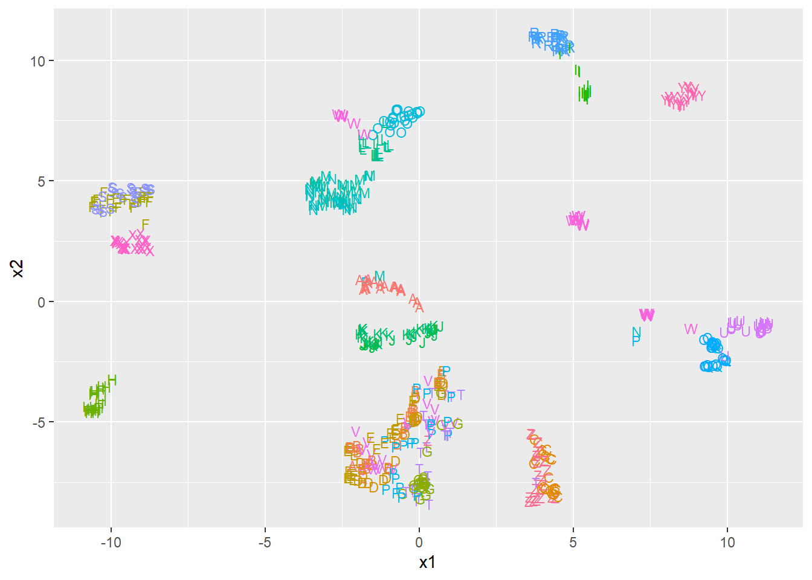
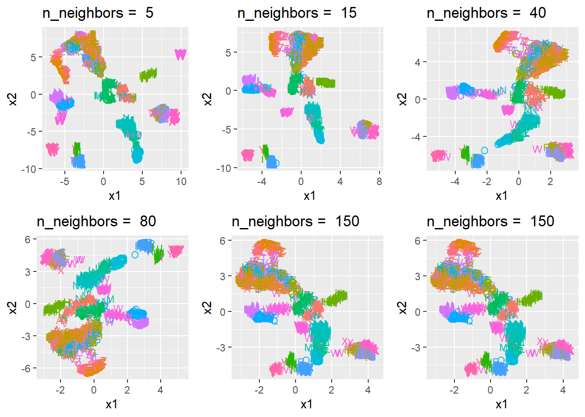
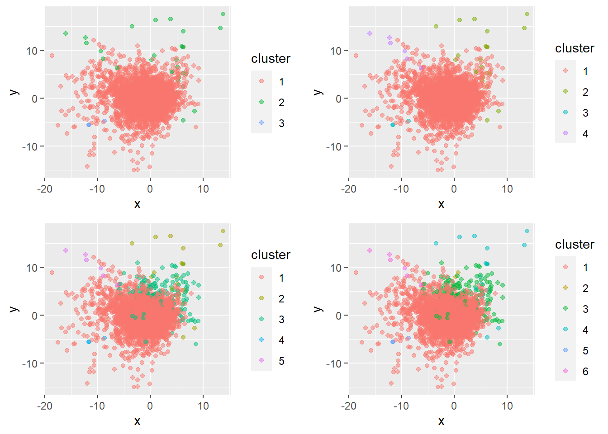
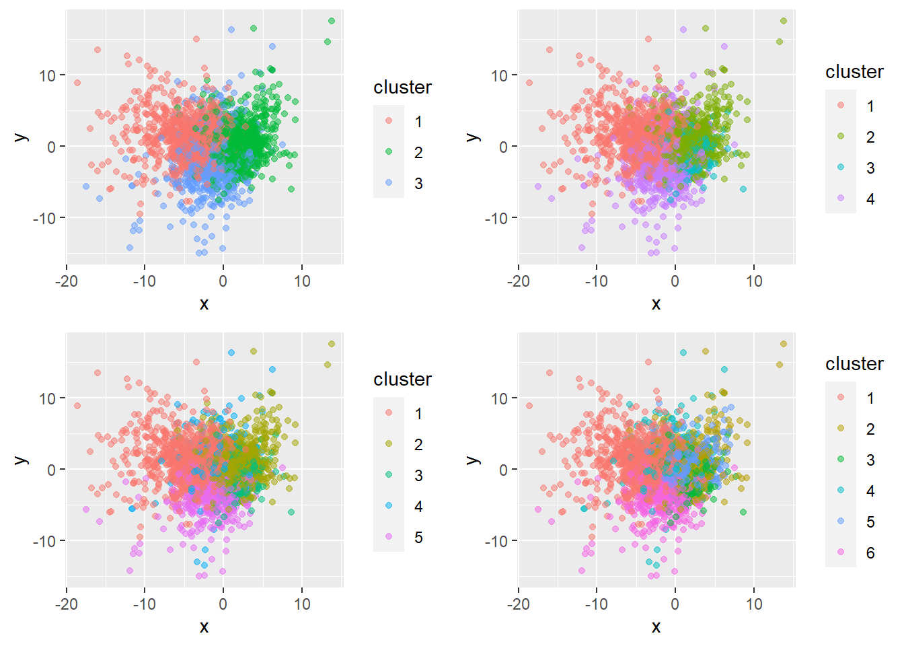
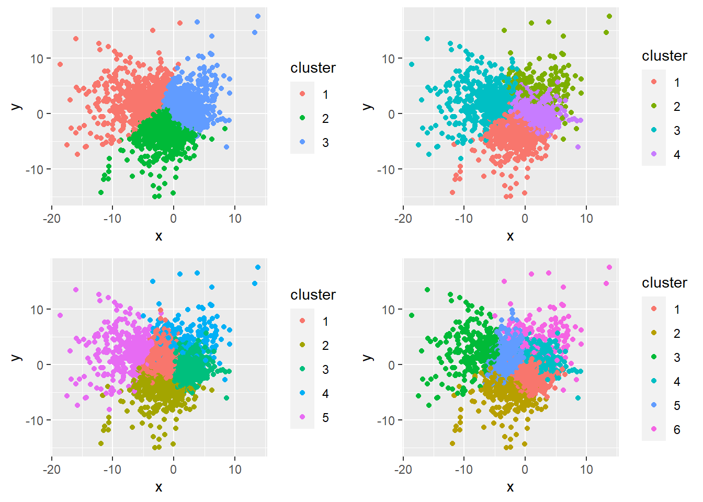

Big Data Assignment 2
Question 1: Manifold Learning
For this question I have selected the Isolet dataset from the UCI Machine Learning Repository. It contains data from 150 subject who were recorded speaking each letter of the English alphabet twice, for a total of 7,797 observations (3 observations are missing). The purpose of this dataset is to train a model to classify recordings of speech by what letter of the alphabet is being said. The data has already been split into a training set of 6,238 observations (120 subjects) and a training set of 1,559 observations (30 subjects). I will limit my analysis to the training set.
There are 617 features, the majority of the which (448) are discrete Fourier transform coefficients of different parts of the waveform corresponding to the different sonorant intervals (SON) of each letter. The other features are a variety of other wave measurements corresponding to different SON, such as zero-crossing rate, amplitude, and duration. Detailed information can be found in the paper by Fanty and Cole (1990).
This dataset provides a highly dimensional problem with which to test different dimensionality reduction techniques, with applications to the real world. Voice recognition software is becoming more widespread with voice assistants such as Alexa and Siri, which rely on models to translate voice recordings into text that it can parse.
Principal Component Analysis (PCA)
Here we have performed PCA on our training set. This is a linear technique that finds linear combinations of the original features that are uncorrelated and maximise the variance of the new principal components. As shown in Figure 1 (a), the first PC contains 19% of the variance of overall variance in our data, then 9% for the next PC. From Figure 1 (b), we can also see that cumulatively, half of the variance is explained by the first 8 PCs, although this tapers off and it isn’t until the 112th PC has been added that 90% of the overall variance in our data is explained by its principal components.


Figure 2 plots the target classes against the first two PCs of the data. Due to the large number of classes, and the number of data points plotted, I also found it useful to take a stratified sample of 20% of the data to declutter the plot as well as using the letter to identify which class each plot point is. I will also do this when analyzing the other methods in this report to make the visualisations clearer.
We do see some clusters of letters forming in Figure 2 (b). In the bottom left, “R” has been quite well isolated, which I suspect is due to it having quite a unique sound when spoken. In contrast to this, on the right hand side of Figure 2 (b), there is a mix of letters like “B”, “C”, “D”, “E”, “P”, “T”, and “Z” clustered together. These letters all share a common /iy/ sound on the end when spoken (like the “ee” in “fleece”), which explains why they have been grouped together, although it would be good to find a dimensionality reduction technique that is further able to separate them based on the different sounds made before the /iy/ sound.


Isometric Mapping (Isomap)
Next we use the Rdimtools implementation of Isomap, with \(k=10\), to reduce the training data down to two dimensions and plot the class labels against these two dimensions. This plot is shown in Figure 3.
The classes again tend to group into clusters when plotted on the reduced dimensions, with “M” and “N” found in the center of Figure 3, “X”, “F”, and “S” clustered together at the bottom right, and again the big group of /iy/ sounding letters clustered together on the left hand side of the plot. However it is not clear that this is an improvement on the results we obtained with PCA in Figure 2 (b), there could however be some improvement with tuning the nearest neighbour parameter, \(k\), to trade off between preserving more local or global structure. Although it was a lot more computationally expensive to obtain the Isomap embedding compared to performing PCA, so any tuning of the \(k\) parameter would likely have to be performed on a stratified sample of the data to reduce the computation to a reasonable length of time.
Uniform Manifold Approximation and Projection (UMAP)
Next we use the umap implementation of UMAP, with default settings, to reduce the training data down to two dimensions and plot the class labels against these two dimensions. This plot is shown in Figure 4.

UMAP has done a much better job at finding an embedding which reduces the dimensionality of our data while seeming to retain key information that groups letters into their own clusters or clusters of similar sounding letters. One area which it has improved on both PCA and Isomap is being able to distinguish “C” and “Z”, from the other /iy/ sounding letters like “B”, “P”, “T”, which intuitively makes sense as “C” and “Z” have a similar soft sound before the /iy/, whereas “B”, “P”, “T”, etc have a more abrupt sound before the /iy/. Similarly we see distinct clusters for letter pairs with similar sounds such as (“Q”, “U”), (“K”, “J”), (“S”, “F”), and (“M”, “N”), as well as some letters grouped by themselves such as “H”, “W”, “X”, “R”, and “O”.
Results for the execution time of each method are given in Table 1. On this dataset PCA had the fastest execution time, followed by UMAP with a still reasonable execution time. The Rdimtools implementation of Isomap performed very poorly on this dataset, taking a very long time. Even though the poor scaling with size is know to be a weakness of Isomap, this time difference is large and perhaps a more efficient implementation in R could be found.
| Method | Time |
|---|---|
| PCA | 1.4 secs |
| Isomap | 2945.6 secs |
| UMAP | 37.0 secs |
Tuning of UMAP
UMAP, as described by McInnes, Healy, and Melville (2020) and in the documents for the python implementation (umap-learn)[https://github.com/lmcinnes/umap], has four main hyperparameters. These are:
- \(n\), the number of neighbours to consider
- \(d\), the target embedding dimension
- min-dist, the minimum distance apart that points are allowed to be in the low dimensional embedding
- metric, which defines how distance is computed e.g euclidean, manhattan
We will test the effect of varying \(n\) using values of 5, 15, 40, 80, 150, and 500. According to the documentation, \(n\) affects whether we will get an embedding that focuses more on local structure (small values of \(n\)) or global structure (large values of \(n\)).

From the results in Figure 5, we can can see that for the smaller values of n_neighbors that there are certain letters that have been grouped by themselves but have no obvious links to other letters such as “W” in the top right of Figure 5 and “Y” in the bottom left. As the value of n_neighbors is increased UMAP does a better job at seeing the global structure of the data while still retaining local structure. As we increase n_neighbors even more, and more emphasis is placed on the global structure, some of the local structure is lost as can be seen by with certain data points no longer being close to those of the same grouping.
Question 2: Clustering
Prior to our clustering analysis we perform PCA on the NCI60 dataset. The first two principal components contain 21.1% of the variance of the overall variance of the dataset. We will plot any resulting clusters against these two principal components to be able to visualise the results in two dimensions.
First we perform hierarchical clustering, with complete linkage and euclidean distance, on the dataset for three to six clusters. From Table 2 we can see the size of the resulting clusters. For the first cut of the dendrogram which creates three clusters, we have one large cluster with 6,792 features, and two smaller clusters with only 35 and 3 features. The next cut that creates four clusters does so by splitting the cluster with 35 features into two clusters with 29 and 6 features. For five clusters, the large cluster of 6,792 features is split into one large cluster with 6,559 features and one smaller cluster with 233 features. Lastly, for six clusters, the cluster with 29 features is split into two clusters with 22 and 7 features.
From this description we can see that how we obtain clusters in hierarchical clustering results in a nested structure, where the clustering obtained by cutting the dendrogram at a certain height is contained within the clustering obtained by cutting the dendrogram at a greater height.
| Cluster ID | Three Clusters | Four Clusters | Five Clusters | Six Clusters |
|---|---|---|---|---|
| 1 | 6792 | 6792 | 6559 | 6559 |
| 2 | 35 | 29 | 29 | 7 |
| 3 | 3 | 3 | 233 | 233 |
| 4 | 0 | 6 | 3 | 22 |
| 5 | 0 | 0 | 6 | 3 |
| 6 | 0 | 0 | 0 | 6 |

Figure 6 shows the resulting clusters plotted against the first two principal components of the data. As we can see, this method results in one main cluster and several smaller clusters. From this, we may be able to deduce that across the 64 different cancer cell lines in our dataset, the majority of genes show similar levels of expression
Now we repeat the same analysis, but instead of using the euclidean distance between two observations, \(\mathbf{x}\) and \(\mathbf{y}\), of \(\sqrt{\sum_{i=1}^{n}(x_i-y_i)^2}\), we use a correlation based distance of \(1 - \mbox{cor}(\mathbf{x}, \mathbf{y})\). We must take care to use the transpose of our data, as R’s cor function calculates correlations between the columns of a matrix whereas we want the correlations between rows (i.e observations), for further details of the code see Appendix XX. By subtracting one, we turn the correlations into a measure of closeness that ranges from 0 (for perfectly positively correlated observations) to 2 (for perfectly negatively correlated observations).
The resulting size of the clusters is given in Table 3, and they are plotted against the first two principal components in Figure 7. Compared to the hierarchical clustering we have more evenly sized clusters
| Cluster ID | Three Clusters | Four Clusters | Five Clusters | Six Clusters |
|---|---|---|---|---|
| 1 | 1778 | 1778 | 1778 | 1778 |
| 2 | 3991 | 2656 | 2656 | 1566 |
| 3 | 1061 | 1335 | 1335 | 1335 |
| 4 | 0 | 1061 | 385 | 385 |
| 5 | 0 | 0 | 676 | 1090 |
| 6 | 0 | 0 | 0 | 676 |

Lastly we perform K-means clustering on the data, using the kmeans function in R, for three to six clusters. The size of the resulting clusters is given in Table 4. Similar to the hierarchical clustering with correlation based distance, we get more evenly sized clusters.
| Cluster ID | Three Clusters | Four Clusters | Five Clusters | Six Clusters |
|---|---|---|---|---|
| 1 | 749 | 1063 | 1856 | 1985 |
| 2 | 1514 | 327 | 533 | 336 |
| 3 | 4567 | 697 | 3766 | 297 |
| 4 | 0 | 4743 | 283 | 2689 |
| 5 | 0 | 0 | 392 | 1273 |
| 6 | 0 | 0 | 0 | 250 |

Question 3: Regression
Firstly we are performing linear regression on the Credit dataset from the ISLR package, with Balance as the independent variable, and all pairwise interactions of the remaining 10 variables (excluding ID) as dependent variables. Table 5 shows the first 7 rows of the dataset, where we can see that we have 7 numeric variables (Income, Limit, Rating, Cards, Age, Education), three binary categorical variables (Gender, Student, Married), and one categorical variable with three levels (Ethnicity). Using dummy coding we will have 11 predictors relating to these 10 variables (Ethnicity will require two terms), with an additional 54 predictors from the pairwise interactions, and one for the intercept term. In total this gives up \(p=66\) predictor terms.
| ID | Income | Limit | Rating | Cards | Age | Education | Gender | Student | Married | Ethnicity | Balance |
|---|---|---|---|---|---|---|---|---|---|---|---|
| 1 | 14.891 | 3606 | 283 | 2 | 34 | 11 | Male | No | Yes | Caucasian | 333 |
| 2 | 106.025 | 6645 | 483 | 3 | 82 | 15 | Female | Yes | Yes | Asian | 903 |
| 3 | 104.593 | 7075 | 514 | 4 | 71 | 11 | Male | No | No | Asian | 580 |
| 4 | 148.924 | 9504 | 681 | 3 | 36 | 11 | Female | No | No | Asian | 964 |
| 5 | 55.882 | 4897 | 357 | 2 | 68 | 16 | Male | No | Yes | Caucasian | 331 |
| 6 | 80.180 | 8047 | 569 | 4 | 77 | 10 | Male | No | No | Caucasian | 1151 |
| 7 | 20.996 | 3388 | 259 | 2 | 37 | 12 | Female | No | No | African American | 203 |
In order to generate the test and training datasets used in this analysis, we used set.seed(42) to control the rng and ensure our results are reproducible, and split the data into 50% training and 50% test using the code in ?@lst-model_matrix. We will train all of our regression models on the training set, and evaluate the performance on the test set using mean squared error (MSE).
| Linear Regression | Ridge Regression | Lasso Regression | |
|---|---|---|---|
| (Intercept) | -220.8030 | -242.2117 | -270.8381 |
| Income | -1.4417 | -3.0083 | -2.2527 |
| Limit | 0.1196 | 0.0765 | 0.1066 |
| Rating | -0.0984 | 0.7145 | |
| Cards | 17.9424 | 15.0788 | 18.4524 |
| Age | 0.8634 | 0.6954 | 0.3691 |
| Education | -10.1770 | -7.4393 | |
| GenderFemale | -58.2972 | -59.2802 | |
| StudentYes | 65.0863 | 85.0547 | 16.9320 |
| MarriedYes | 66.0225 | 62.9968 | |
| EthnicityAsian | -46.9345 | -79.0408 | |
| EthnicityCaucasian | -84.5261 | -58.9311 | |
| Income × Limit | 0.0006 | -0.0004 | -0.0007 |
| Income × Rating | -0.0260 | -0.0054 | -0.0019 |
| Income × Cards | -0.0981 | -0.1630 | -0.2095 |
| Income × Age | 0.0288 | 0.0047 | -0.0231 |
| Income × Education | -0.1253 | -0.0828 | |
| Income × GenderFemale | -0.5591 | -0.6195 | -0.0425 |
| Income × StudentYes | -1.0977 | -1.0807 | -0.9977 |
| Income × MarriedYes | -0.1370 | 0.0018 | -0.0769 |
| Income × EthnicityAsian | 0.1397 | -0.2447 | |
| Income × EthnicityCaucasian | 0.8006 | 0.1735 | -0.1359 |
| Limit × Rating | 0.0004 | 0.0003 | 0.0003 |
| Limit × Cards | 0.0087 | 0.0067 | |
| Limit × Age | 0.0000 | -0.0001 | |
| Limit × Education | -0.0120 | 0.0014 | 0.0000 |
| Limit × GenderFemale | 0.0320 | 0.0135 | 0.0010 |
| Limit × StudentYes | 0.1338 | 0.0480 | 0.0745 |
| Limit × MarriedYes | 0.0008 | -0.0005 | |
| Limit × EthnicityAsian | 0.1728 | 0.0141 | 0.0046 |
| Limit × EthnicityCaucasian | 0.0737 | 0.0008 | 0.0000 |
| Rating × Cards | -0.1396 | -0.1018 | |
| Rating × Age | -0.0146 | -0.0084 | |
| Rating × Education | 0.1969 | 0.0054 | 0.0015 |
| Rating × GenderFemale | -0.3330 | -0.0573 | |
| Rating × StudentYes | -0.8490 | 0.3559 | 0.0008 |
| Rating × MarriedYes | -0.0807 | -0.0371 | |
| Rating × EthnicityAsian | -2.5300 | -0.0790 | |
| Rating × EthnicityCaucasian | -1.2744 | -0.1017 | |
| Cards × Age | 0.0941 | 0.1101 | |
| Cards × Education | -1.1528 | -0.3560 | |
| Cards × GenderFemale | 12.0399 | 10.1407 | 7.5466 |
| Cards × StudentYes | 2.5331 | -3.3248 | 6.7376 |
| Cards × MarriedYes | -2.5928 | -4.3142 | |
| Cards × EthnicityAsian | 29.0547 | 12.5316 | |
| Cards × EthnicityCaucasian | 27.5689 | 16.8946 | 10.0049 |
| Age × Education | 0.0802 | 0.0718 | |
| Age × GenderFemale | 0.6221 | 0.4992 | |
| Age × StudentYes | -1.3396 | -1.1097 | |
| Age × MarriedYes | 0.4306 | 0.1704 | |
| Age × EthnicityAsian | 0.6581 | 0.5464 | |
| Age × EthnicityCaucasian | 0.1176 | 0.2352 | 0.0382 |
| Education × GenderFemale | -4.6820 | -4.3741 | -3.7254 |
| Education × StudentYes | 5.2620 | 4.7980 | 5.7730 |
| Education × MarriedYes | -2.7136 | -2.5230 | |
| Education × EthnicityAsian | -0.0259 | -0.1180 | |
| Education × EthnicityCaucasian | 5.1960 | 3.1624 | |
| GenderFemale × StudentYes | -8.8828 | -9.2673 | 4.3887 |
| GenderFemale × MarriedYes | -6.5321 | 10.7694 | 8.3773 |
| GenderFemale × EthnicityAsian | 67.3341 | 43.1462 | 14.8415 |
| GenderFemale × EthnicityCaucasian | 54.0872 | 35.4796 | 10.7716 |
| StudentYes × MarriedYes | 40.5759 | 13.1585 | |
| StudentYes × EthnicityAsian | 100.9584 | 73.4320 | 27.8207 |
| StudentYes × EthnicityCaucasian | 67.6588 | 52.6026 | |
| MarriedYes × EthnicityAsian | -33.1516 | -28.5529 | -12.9988 |
| MarriedYes × EthnicityCaucasian | -17.7494 | -28.6837 | -9.7156 |
References
Fanty, Mark, and Ronald Cole. 1990. “Spoken Letter Recognition.” In NIPS, 3:220–26. https://doi.org/10.3115/116580.116725.
McInnes, Leland, John Healy, and James Melville. 2020. “UMAP: Uniform Manifold Approximation and Projection for Dimension Reduction.” https://arxiv.org/abs/1802.03426.